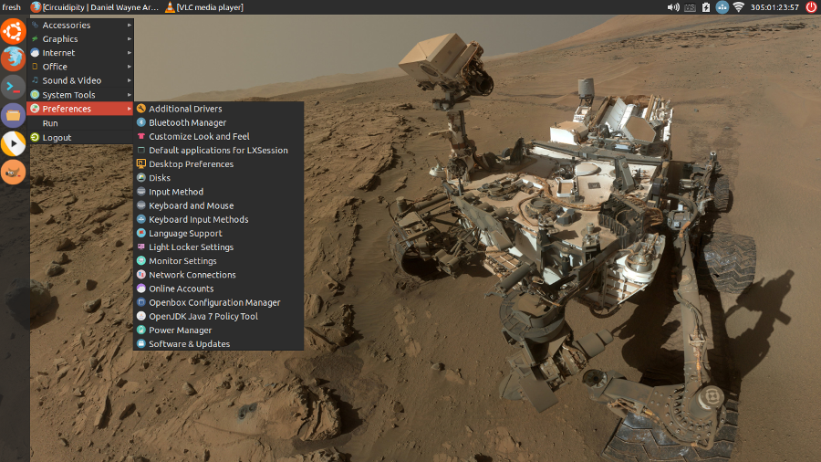

The combination of Ubuntu plus the LXDE desktop equals the lightweight and cheerful Lubuntu. Its loosely coupled components create a friendly environment for swapping out bits and customizing the interface, and ongoing development of the next-generation LXQt looks promising!
Here are a few small hacks I like to do to make a great OS even better. Modifications are made on a fresh install of Lubuntu 14.04, which is a Long Term Support (LTS) release (till April 2017).
Let's go!
0. Update kernel
Lubuntu installs the 3.13 Linux kernel which may have incomplete hardware support for newer devices like the Acer C720 Chromebook.
Fix: Download and install a more recent kernel from Ubuntu MainlineBuilds. An example using the 3.17 kernel:
$ wget -c http://kernel.ubuntu.com/~kernel-ppa/mainline/v3.17.1-utopic/linux-headers-3.17.1-031701-generic_3.17.1-031701.201410150735_amd64.deb
$ wget -c http://kernel.ubuntu.com/~kernel-ppa/mainline/v3.17.1-utopic/linux-headers-3.17.1-031701_3.17.1-031701.201410150735_all.deb
$ wget -c http://kernel.ubuntu.com/~kernel-ppa/mainline/v3.17.1-utopic/linux-image-3.17.1-031701-generic_3.17.1-031701.201410150735_amd64.deb
$ sudo dpkg -i linux*.deb
... and reboot.
1. Screen lock
The light-locker screen utility locks the screen when the system has been idle for several minutes regardless of user-defined preferences.
Fix: Disable system-wide screen locking:
$ sudo mv /etc/xdg/autostart/light-locker.desktop /etc/xdg/autostart/light-locker.desktop.bak
... and configure per-user settings in Preferences->Light Locker Settings, which are saved to ~/.config/autostart/light-locker.desktop.
Sample Exec line that locks screen when system-suspend is activated:
Exec=light-locker --lock-after-screensaver=0 --lock-on-suspend --no-late-locking
Source: Lubuntu enforces screen lock
2. Editor
Install full-version of vim text editor and make it the default system editor:
$ sudo apt-get install vim tmux
$ sudo update-alternatives --config editor
There are 4 choices for the alternative editor (providing /usr/bin/editor).
Selection Path Priority Status
------------------------------------------------------------
0 /bin/nano 40 auto mode
1 /bin/ed -100 manual mode
2 /bin/nano 40 manual mode
* 3 /usr/bin/vim.basic 30 manual mode
4 /usr/bin/vim.tiny 10 manual mode
Press enter to keep the current choice[*], or type selection number:
3. Terminal
Substitute lxterminal with rxvt-unicode + tmux terminal multi-plexer and make urxvt the default terminal:
$ sudo apt-get install rxvt-unicode fonts-droid
$ sudo update-alternatives --config x-terminal-emulator
Create $HOME/.Xresources and set terminal options for fonts, colours, etc.
4. SSH keys
See Secure remote access using SSH keys for configuring OpenSSH and generating SSH keys for a Lubuntu installation.
5. Media player
Install multimedia codecs and the awesome vlc media player:
$ sudo apt-get install ubuntu-restricted-extras vlc
6. Java Runtime Environment
Install a JRE (default is openjdk-7-jre):
$ sudo apt-get install default-jre
7. $HOME/bin
Create a directory to hold personal scripts that will be added to $PATH:
$ mkdir ~/bin
9. Keyboard shortcuts
Create shortcuts in $HOME/.config/openbox/lubuntu-rc.xml. Example for launching dmenu with key combo ALT-A:
<!-- Keybindings for running Run menu -->
<keybind key="A-a">
<action name="Execute">
<command>dmenu-run.sh</command>
</action>
</keybind>
Source: lubuntu-rc.xml
10. Custom application launchers
Create *.desktop files with custom options to launch applications. Make a custom *.desktop system-wide location:
$ sudo mkdir /usr/local/share/applications
A sample rxvt-unicode-custom.desktop launcher contains:
[Desktop Entry]
Name=Urxvt
GenericName=Terminal
Comment=Use the command line
TryExec=urxvt
Exec=urxvt
Icon=xterm-color
Type=Application
Categories=Utility;TerminalEmulator;
11. Terminate frozen applications
Xkill is a utility for terminating misbehaving X applications. When activated it displays a crosshair cursor that can be maneuvered in place and a click kills the client app that lies beneath.
A sample /usr/local/share/applications/xkill-custom.desktop launcher:
[Desktop Entry]
Name=Xkill misbehaving apps
Comment=KILL KILL KILL
Exec=xkill
Icon=system-error
Type=Application
Categories=System;Utility;
Save file and the item will appear under Lubuntu's Menu->System Tools.
12. Favourites panel
Right-click on the LXDE panel and select Create new panel to create an extra panel to hold favourite application launchers. Panel configs are store in $HOME/.config/lxpanel/Lubuntu/panels.
13. Customize the theme
Choose an alternative theme for the Lubuntu desktop. I like Numix:
$ sudo add-apt-repository ppa:numix/ppa
$ sudo apt-get update
$ sudo apt-get install numix-gtk-theme numix-icon-theme numix-icon-theme-circle
Select the new theme in Menu->Preferences->Customize Look and Feel [1].
14. Dual display
See Dual display configuration in Lubuntu for configuring LXDE to auto-detect at login if a second display is attached and make the necessary adjustments.
15. Custom login wallpaper
Login window is managed by lightdm-gtk-greeter. To set a new background image for the login window:
$ sudo mkdir /usr/local/share/wallpapers
$ sudo cp my_new_login_image.jpg /usr/local/share/wallpapers
Edit /etc/lightdm/lightdm-gtk-greeter.conf and configure the new background:
background=/usr/local/share/wallpapers/my_new_login_image.jpg
16. Auto-mount external drives at startup
See Add USB storage to Chromebooks for an example scenario.
18. Custom GRUB colours and splash image
Create /boot/grub/custom.cfg and set custom GRUB menu colours. Example settings:
set color_normal=yellow/black
set menu_color_normal=yellow/black
set menu_color_highlight=white/green
Pick an image for the GRUB background (see help.ubuntu.com for restrictions) and save to /boot/grub. Set the new background in /etc/default/grub:
GRUB_BACKGROUND="/boot/grub/my_new_grub_image.tga"
Update GRUB:
$ sudo update-grub
... and reboot.